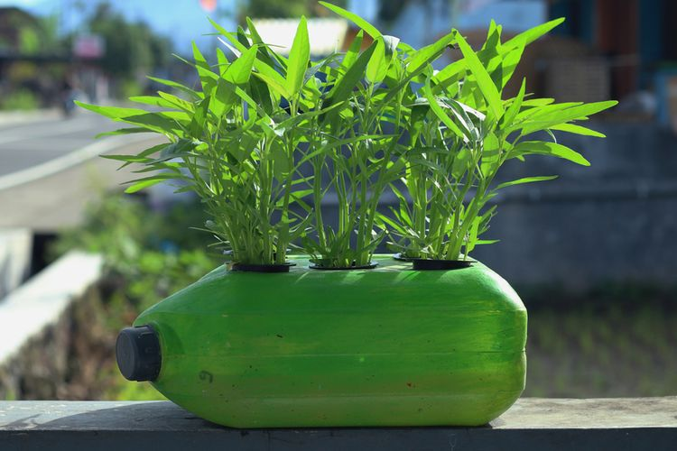

KANGKUNG
Kangkung (Ipomoea aquatica Forsk.) adalah tumbuhan yang termasuk jenis sayur-sayuran dan ditanam sebagai makanan.
Kangkung banyak terdapat di kawasan Asia dan merupakan tumbuhan yang dapat dijumpai hampir di mana-mana terutama di kawasan berair.
Kandungan vitamin A dan vitamin C dalam sayuran ini juga sangat tinggi. Dalam secangkir bayam air yang sudah disiangi, Anda bisa memenuhi 70% kebutuhan harian vitamin A dan 51% vitamin C